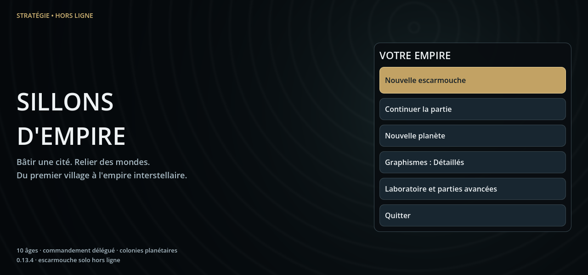

Sillons d’Empire · 0.13.4
Correctif d’import Android. Les modèles sont livrés dans une bibliothèque native prête à charger : aucun GLB à importer dans le projet jouable. Version candidate.
33 scénarios PASS sous Godot 4.7.2 Linux ; les captures ci-dessous viennent de la version 0.13.4 sous OpenGL logiciel, à 1280×600. Le démarrage sur le téléphone et l’export APK ne sont pas encore testés. La géométrie héritée reste souvent low-poly.

Menu principal — 0.13.4 Terrain — modèles chargés depuis le paquet natif
Terrain — modèles chargés depuis le paquet natifInstallation : guide de reprise Android. Vérifications : rapport actuel.
Galerie historique 0.13.3 : douze captures antérieures et benchmark local de la refonte, conservés pour référence.